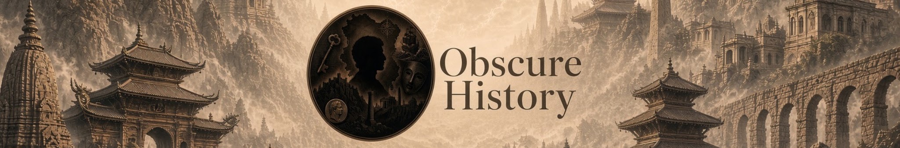

A written companion to the channel
Obscure History
Translating and preserving old stories so they can be read again — slowly, on the page, chapter by chapter, and beside the films on YouTube.
Channel: @obscurehistorystoriesfromworld (opens in a new tab)
The work
Old stories, brought across
Obscure History is a public archive for translations of older narratives — the written counterpart to the YouTube channel of the same name. Each story will live in its own folder, with one page per chapter, so the written shelf can grow without a paid host or a database.
The stories below are reserved space, not published work. Titles marked placeholder are stand-ins for layout only. Finished translations will replace them; nothing here is presented as a historical claim or a completed rendering.
The shelves
Stories, waiting for chapters
Placeholder titles only. Open a story to see its chapter list.